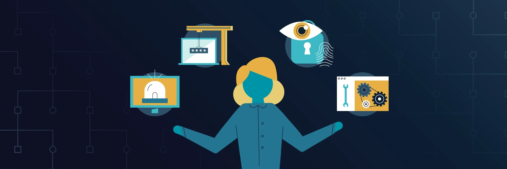

Careers in Cybersecurity

Cybersecurity jobs are growing because every company and school needs people who can keep their systems safe. There are many different jobs in this field:
| Job | What They Do |
|---|---|
| Security Analyst | Watches networks and looks for attacks or strange activity. |
| Ethical Hacker | Tests systems for weak spots, with permission, so they can be fixed. |
| Security Engineer | Builds and sets up safe systems and tools. |
| Incident Responder | Fixes things after an attack and helps stop it from happening again. |
A good way to start is to learn the basics, practice safely on your own computer, and study for a beginner certificate like CompTIA Security+.